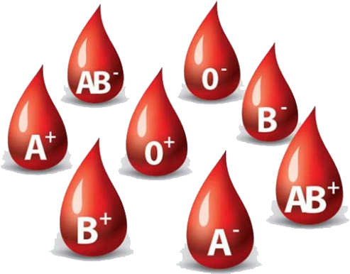
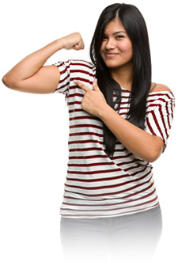
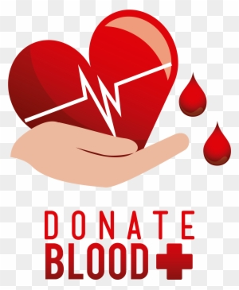

| Blood Type | Percent of the Population |  |
|---|---|---|
| O(+ve) | 31.18% | |
| O(-ve) | 1.39% | |
| A(+ve) | 21.44% | |
| A(-ve) | 0.96% | |
| B(+ve) | 34.58% | |
| B(-ve) | 0.96% | |
| AB(+ve) | 8.85% | |
| AB(-ve) | 0.64% |
Blood types are very important when a blood transfusion is necessary. In a blood transfusion, a patient must receive a blood type compatible with his or her own blood type. If the blood types are not compatible, red blood cells will clump together, making clots that can block blood vessels and cause death.
If two different blood types are mixed together, the blood cells may begin to clump together in the blood vessels, causing a potentially fatal situation. Therefore, it is important that blood types be matched before blood transfusions take place. In an emergency, type O blood can be given because it is most likely to be accepted by all blood types. However, there is still a risk involved.
| Blood Type | Can Donate Red Blood Cells To | Can Receive Red Blood Cells From |
|---|---|---|
| O(+ve) | O(+ve), A(+ve), B(+ve), AB(+ve) | O(+ve), O(-ve) |
| O(-ve) | Everyone | O(-ve) |
| A(+ve) | A(+ve), AB(+ve) | A(+ve), A(-ve), O(+ve), O(-ve) |
| A(-ve) | A(+ve), >A(-ve), AB(+ve), AB(-ve) | A(-ve), O(-ve) |
| B(+ve) | B(+ve), AB(+ve) | B(+ve), B(-ve), O(+ve), O(-ve) |
| B(-ve) | B(+ve), B(-ve), AB(+ve), AB(-ve) | B(-ve), O(-ve) |
| AB(+ve) | AB(+ve) | Everyone |
| AB(-ve) | AB(+ve), AB(-ve) | A(-ve), B(-ve), O(-ve), AB(-ve) |
|
Blood donation is a community responsibility. While you're reading this, a local patient needs blood.
What if everyone eligible to donate became complacent and decided they didn't need to donate because someone else would? What if there wasn't enough donated blood available when you, a loved one - anyone - needed it? Our blood supply comes from caring donors like you. It takes about one hour of your time. When you give blood, it gives someone another smile, another hug, another chance. It is the gift of life. |
 |
To ensure the safety of blood donation for both donors and recipients, all volunteer blood donors must be evaluated to determine their eligibility to give blood.
To give blood you must:
Before donating you should:
If you have specific questions about blood donation or your eligibilitiy to donate blood, contact us at Active Blood Bank or call 01689017897 (24/7) anytime. |
 |
Donation Type |
Frequency |
| Whole blood donation | 56 days (8 weeks) |
| Platelet donation | 7 days (up to 24 times a year) |
| Plasma donation | 28 days (4 weeks) |
| Double Red Blood Cells donation | 112 days (16 weeks) |
Donating blood for the first time? Been awhile since you made your last donation? Unsure of what to do? Here are some pointers on how you can prepare for your blood donation.
The whole donation process involves really simple steps and takes an average of 45 minutes to complete:
1. Form Filling (5 mins)
2. Registration (5 mins)
3. Medical Screening (10-15 mins)
4. Haemoglobin Check (5 mins)
5. Blood Donation (10-15 mins)
6. Rest and Refreshment (15 mins)